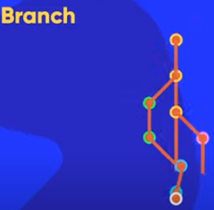
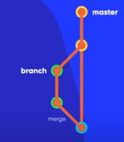

Conceitos de Branch

"branch, em tradução literal, significa “ramo”. No mundo da programação, ela tem o mesmo significado: uma branch é uma ramificação do seu projeto. Os repositórios no GitHub funcionam como uma árvore."
Quer saber mais acesse o link: Curso de Git e GitHub, aula 12
O que é Merge

"O merge(mesclagem) é o jeito do Git de pegar duas branchs e unificar em apenas um histórico. O comando git merge permite que você pegue as linhas de desenvolvimento independentes criadas pelo git branch e junta elas em apenas uma ramificação."
Quer saber mais acesse o link: Curso de Git e GitHub, aula 12